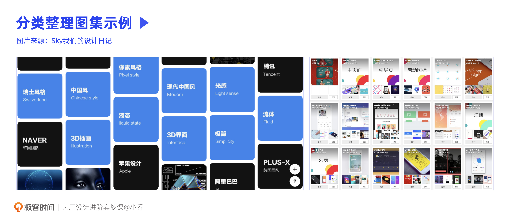
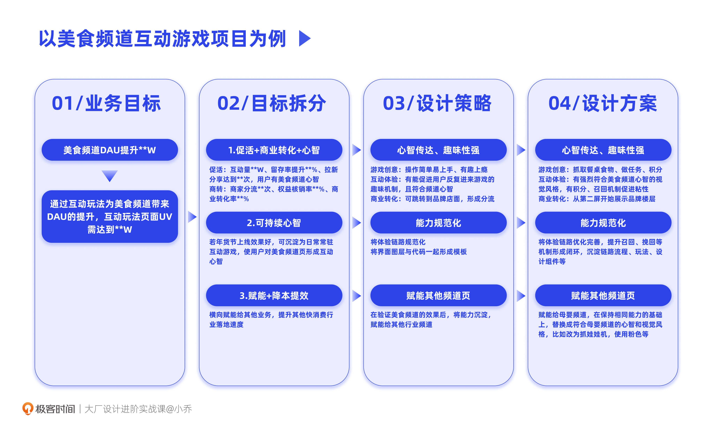
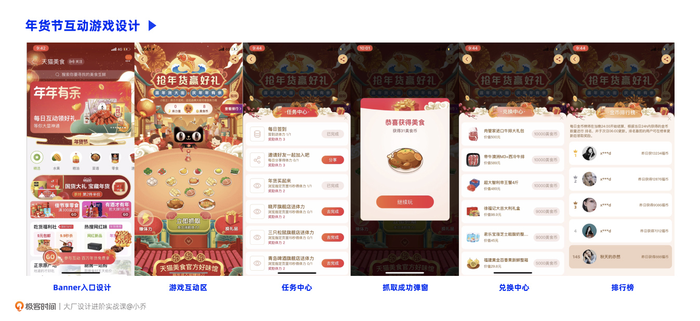
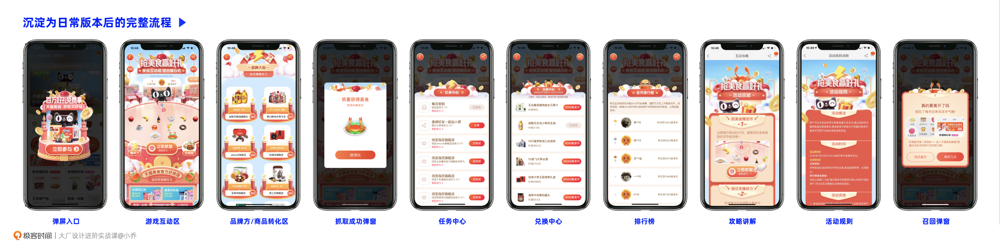
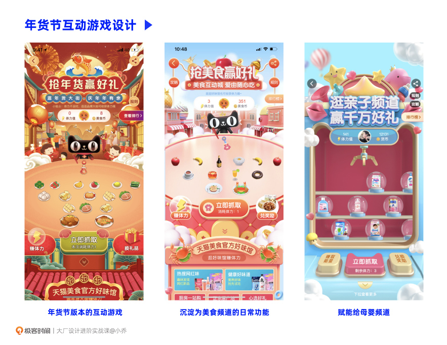
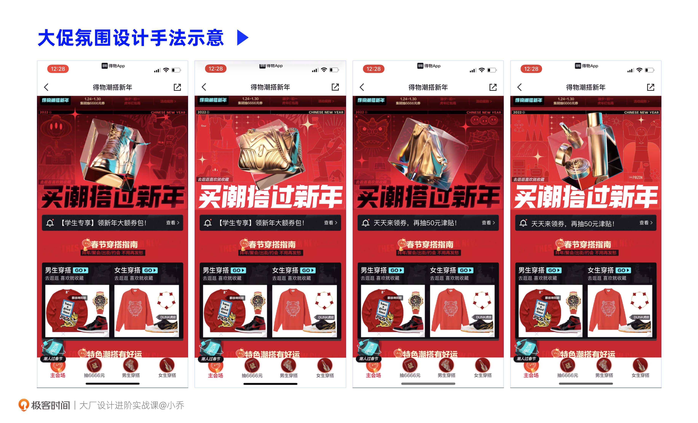
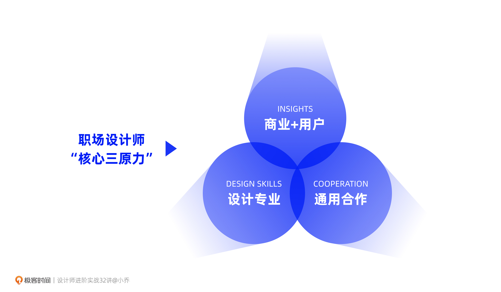

- 00 开篇词 升维思考，是设计师有效成长的第一步.md.html
- 01 业务周期：0-1-10-100-N的发展策略.md.html
- 02 商战模式：如何在商业竞争下突出重围？.md.html
- 03 市场洞察：如何找寻差异化撬动支点？.md.html
- 04 用户洞察：不懂用研的设计师不是好职场人.md.html
- 05 用户画像：是形式主义还是真的有效？.md.html
- 06 用户旅程：挖掘不同用户的核心机会点.md.html
- 07 职场晋升：看懂晋升的“游戏规则”.md.html
- 08 设计价值升级：五层进阶突破成长.md.html
- 09 基础价值 核心三原力：如何将需求转化为设计稿？.md.html
- 10 基础价值 第一性原理：从问题本质解决问题.md.html
- 11 基础价值 设计复盘：只是量化设计结果吗？.md.html
- 12 二级价值 负向网兜：如何全面发现负向问题？.md.html
- 13 二级价值 设计自驱：如何做好项目Owner？.md.html
- 14 二级价值 自驱合作：如何反内卷处理合作关系？.md.html
- 15 三级价值 增长误区：思维惯性陷阱和虚荣数据.md.html
- 16 三级价值 用户增长历程：AARRR是万能的吗？.md.html
- 17 三级价值 产品增长：如何做好产品创新？.md.html
- 18 三级价值 运营增长：如何自驱营销活动和投放？.md.html
- 19 三级价值 品牌增长 抢占心智，赢得人心红利.md.html
- 20 三级价值 增长实操：如何“步步为营”推动落地？.md.html
- 21 四级价值 L型赋能：让T型人才发挥更大价值.md.html
- 22 四级价值 “网状对比”解决共性痛点.md.html
- 23 五级价值 商业画布：设计师可以担任业务方吗？.md.html
- 24 五级价值 共创洞察：如何做好一次完善的workshop？.md.html
- 25 五级价值 领导力觉醒：写给新晋管理者.md.html
- 26 工作选择（上）：2B or 2C设计师？如何规划领域？.md.html
- 27 工作选择（下）：大厂 or 小厂？如何选择赛道？.md.html
- 28 人才地图：认知自我，成为高潜力人才.md.html
- 29 成长历程：如何从设计小白成长为团队负责人？.md.html
- 30 冰山模型：如何成为让面试官欣赏的“面霸”？.md.html
- 31 作品集指导：什么是面试官喜欢的作品集？.md.html
- 用户故事 什么是职场设计师进阶的正确姿势？.md.html
- 结束语 突破自我，成人达己.md.html
- 捐赠
09 基础价值 核心三原力：如何将需求转化为设计稿？
你好，我是小乔。
上节课我们一起学习了设计师能力进阶的五个阶梯，今天我们将由第一阶梯“基础价值”出发，开启我们的进阶之路。
基础价值，就是我们作为设计师最日常的工作，承接需求并高质量完成设计稿。虽然看起来“基础”，但对于各个级别来说都是最重要、最紧急的事情。不同同学产出的需求支持也有质量高低的差异，我们可以通过科学的方法让它开出花来，展现出更高的设计价值。
你可以想一想，在工作中有没有遇到过这样的情况呢：
- 业务方对我们的设计稿指指点点，比如字改大一些、按钮改大一点，设计师明明是那个审美水平最高的人，怎么变成业务方指导我们画图了呢？
- 设计师在项目中充分炫技，设计了非常酷炫的界面，leader和业务方却非常不满意，难道不是越酷炫越好吗？
这两个现象反映了两个问题，一个是设计师没有充分理解业务方的需求，导致设计产出并没有达到业务需求的目的，业务方只好亲自“指指点点”；第二个是设计师陷入了盲目“自嗨”现象，误认为“美的”就是“好的”。要解决这两个问题，我们就需要了解什么是称职的设计师。
什么是设计师的“核心三原力”？
随着时代的发展，设计师的能力要求对比10年前来说，已经有了很多次升级。设计师也从手工技能型人才，逐渐升级为可以拆解用户和商业洞察、并将其转化为设计表达的手脑配合型人才。
新一代的职场设计师需要具备三个核心基础能力，我称其为“核心三原力”：
- 设计专业能力：扎实的设计专业基本功，包含审美能力和软件技能；
- 洞察分析能力：理解商业业务目标、分析用户洞察，且有将其转化为设计表达的能力；
- 通用合作能力：与业务上下游合作方有效沟通、推动项目，并把控风险、保证项目落地的能力。
这三个能力，可以直接帮助我们提升基础价值，理解和拆分业务需求，产出经得起推敲的高质量设计稿，让合作方明白，我们并不是自视清高却不懂业务的“审美代言人”。
如何获得“核心三原力”？
在核心三原力中，设计专业能力是我们成为一名合格职场设计师的基础，第二个对商业和用户的洞察能力是我们做一切项目的起源与目标，有了目标才能拆分转化为设计师可以发力的事情，而第三个通用合作能力是连接我们的基础技能与项目目标的桥梁。我们先从专业能力的提升开始说起。
如何提升设计专业能力？
第一个基础能力，肯定难不倒你，你也可能有着比我更丰富的经验。
首先，审美能力可以通过多看国内外的设计网站和设计趋势来提升。看到美观的界面、图片等素材，就可以随时收藏下来，可以使用Pinterest、花瓣、Eagle等素材管理平台，储存成自己的灵感库。有序的素材分类管理有助于我们在做设计稿时快速寻找灵感。

你也可以像上面这张图一样，按照自己的分类习惯来整理，比如可以分为：设计趋势、创意H5、大促主会场、金融产品、B端产品、电商设计、线下零售设计等等。随着时间的积累，你会发现自己之前的收藏已经入不了你的法眼，那么恭喜你，这说明你的审美素养在不断地提升。
至于软件技能，学习起来就更简单了。网络上有大量的软件教程，通常我们通过一周的时间，就可以将一个完全不会的软件掌握到可产出设计的程度。即使在日常工作中遇到一些设计效果不知道怎么实现，也可以临时在网上搜索方法。
比如我团队的一个同学在入职之前是不会C4D的，但因为工作需要，他现在已经是个C4D高手了。这也是为什么设计手活好和软件技能多，并不能区分人才是否优秀，因为获取能力的门槛不高，只能作为基础素质。不过，在能力相当的情况下，手活能力突出的同学一定是比手活能力不好的同学更有竞争力的。
提升专业能力这件事虽然已经是老生常谈，但它却是保住设计师饭碗和完成项目的基础。
如何提升洞察推导能力？
在我们不断储备设计专业能力的同时，对用户与商业的分析洞察能力可以指导我们走对方向，开阔认知，并大大提升设计价值。在第二章节中，我们已经学习了如何洞察商业与用户的机会点，因此在这节课中，我们将重点放在如何合理地将机会点转化为设计输出。
许多年轻的设计师会在接到需求的第一时间就把自己限制在设计稿的具体设计中，没有深究需求背后的原因，也没有拆解到更系统的设计全案，不清楚背后的推导逻辑才是更重要的价值和资产。
我们要明白的是，设计目标和业务目标是不可拆分的。设计不是一件抛开业务需求、只顾自己审美自嗨的事情，而是为了达成业务目标的其中一种发力方式。为了达成这个共同的业务目标，产品、运营、设计等不同职能的同学需要各司其职，拆分出自己可以发力的方向。
比如一个电商平台，为了提升商品的成交转化率，运营可以优化商品组织，将商品与更适合的用户进行匹配；而设计师可以提升商品的表现力，从而提升用户对商品的了解和购买欲望。
为了提升商品力，我们可以在商品主图贴上美观的氛围牛皮癣，强调打折信息、春节正常发货等商品优势；也可以把图片改成360度旋转，或者使用AR试穿功能，让用户更有效地感知到商品全貌。这些方法都需要我们设计师在其中发挥作用。你可以发现，所有动作的出发点，都是为了达成业务目标，也就是提升商品的成交转化率。
明白了这个逻辑后，我们做设计就变得有据可循了。我整理了由业务目标、目标拆分、设计策略、设计方案这四个步骤组成的“四步拆解法”，希望帮助你理顺设计思路，充分发挥洞察推导能力。
这里，我以一个具体案例来演示“四步拆解法”的使用方式。这个案例是手机淘宝在某一年的年货节大促项目中，美食频道页的互动游戏设计。在实际的设计过程中，项目时间和各方面资源的限制条件很多，与外包的对接工作也比较复杂，为了帮助你更好地理解，我对以下步骤做了简化。

第一步，与业务方讨论业务目标，并达成共识。对于美食频道来说，DAU是它的北极星指标，什么钩子才能吸引用户进来呢？那一年正是互动游戏在电商平台兴起的一年，用户对于这样的新交互形态有着强烈的兴趣，于是我们决定使用互动游戏玩法来带动美食频道DAU的提升。
第二步，拆分业务目标。通过发散和拆分，在更细的颗粒度中找寻设计师可以下手的角度。在这个过程中，我们需要与业务方对齐数据指标，确定怎样算是我们做成功了。
目标1：我们的第一优先级就是有用户来参与这个互动游戏，并在游戏过程中对品牌方、商品形成交易转化，因此我们制定了互动量、频道页留存提升率、拉新分享量、商家分流数、权益核销率、成交转化率等等指标。
目标2：我们并不希望这只是个耗人耗财的一次性活动，如果这个模式验证成功，我们就可以将其长期沉淀在美食频道的页面内，使用户对美食频道形成粘性和心智，而不止是在大促期间。
目标3：再进一步思考，我们还可以将这个模式赋能给其他的行业频道，降本提效，形成影响力。
第三步，针对拆分的目标，制定设计策略。
针对第一个小目标，就需要这个页面有用户流量，并在互动中形成商业转化。对于我们设计来说，策略抓手是什么呢？我们可以提供足够有吸引力的体验，让进来的用户愿意互动，且来过一次还愿意再来。我们需要传达这是一个针对食品行业的互动游戏，让用户形成对美食频道的认知。所以我们的设计策略就是强心智传达和强趣味性。
针对第二个小目标，要让这个互动游戏在日常中沉淀下来，就需要在这次年货节上线后全面监控数据，针对表现不佳的体验进行优化，并最终将体验流程和设计稿形成规范和组件，将一次性的大促活动沉淀为常驻的日常游戏。
针对第三个小目标，如果要赋能给其他行业频道，需要更替与其相匹配的心智，比如视觉风格需要匹配该频道页的主色调，游戏本身需要符合这个频道细分用户的认知。
第四步，输出设计方案。在梳理清晰前面的三步后，最后一步就到了我们最擅长的设计方案输出阶段，将逻辑思路转化为精美的设计稿。
在这个阶段中，针对第一个设计策略，可以使用餐桌、食物等元素表达美食频道心智，并采用富有食欲的暖色系KV。为了提升用户的粘性，我们设置了积分兑换奖品的机制，每当用户抓取到餐桌上的食物，就会根据抓取难度积累相应的积分。为了促进商业转化，抓取次数限制在3次，用户可以通过做任务或者逛品牌店铺主页来换取游戏次数，在第一屏下方开始透出品牌方或商品楼层，便于将用户流量分配给品牌方和商品。

针对第二个设计策略，需要在上线后全面监控数据、做用户反馈的收集。这是一次成功的大促互动项目，数据在上线第4天就全部达到了我们的业务指标，但在一些链路中存在着表现不佳的数据，比如用户跳失后不再回来，主要原因是找不到回来的路径。于是我们在用户离开时设计了挽留弹窗，并引导第二次进来的方式。我们根据用户体验旅程，针对所有可以优化的节点调整了细节，在上线第8天，DAU达到了原本制定的业务指标的3倍。最终，项目形成了曝光、互动、商业转化、留存召回的完整链路，并沉淀了设计组件和玩法机制。

针对第三个设计策略，我们也将验证成功的互动游戏能力，赋能给了其他行业频道。以母婴频道为例，为达到降本提效的作用，我们复用原本沉淀下来的游戏引擎、互动机制、设计组件，将视觉替换成符合母婴频道心智的粉色，表层皮肤改为粉嫩的抓娃娃机，以低成本的方式进行了赋能，仅花费7天时间就成功上线了。这次项目同样对母婴频道形成了正向作用。

这个互动游戏的在线时间从上线起一直持续了两年，这对于每个月都得优化调整、不停找寻新机会点来满足和带领用户的淘宝来说，是非常少见的现象，也是这个项目的成功之处。
希望通过详细分析这个案例，可以向你传达提升洞察推导能力的3个技巧，让规划更加全面：
当我们接到业务需求时，需要真正理解业务目标，而不是一开始就已经在想设计表现上怎么做，这样才能全面推导出设计可以发力的方式；
除了业务本身最基础的需求外，我们还可以进一步考虑，不止0-1支持需求上线，还可以把1-10，10-100的发展都规划出来。在满足条件时，绑定我们的合作方一起发起推动，这样才能体现完整、体系化的思维。还记得我们讲过P7设计师的能力要求吗，需要具备体系化思维；
设计是理性的推导+感性的审美产出。其实每个小目标在转变为设计稿之前，都是运用了同样的逻辑思路在推导。比如针对第一个小目标，我其实是进一步拆分了：促活、商业转化、建立频道心智等更细维度的目标，再根据每一个目标理性推导设计策略和设计方案。
如何提升通用合作能力？
获得了前面两个能力后，我们如果再拥有通用合作能力，就可以让项目顺利地落地了。
我们做项目通常会有两种角色的情况，一种是设计师作为需求支持的角色，承接业务方给到的需求；另一种是我们设计师自己作为需求提出者的角色，不管是优化型项目或是增长型项目，甚至是自己担任业务方成立了一个新的团队或者部门。我们将两种情况分开讨论。
第一种，承接业务需求的角色：
日常工作中，业务方给到我们的需求，清晰度已经达到了80%左右，设计师需要在需求评审过程中充分表达自己的意见、确认可执行性，就可以按需求文档开展设计工作了。
如果这个需求本身已经比较合理、完整的话，这个过程并不那么需要设计师的前置介入，没有对于需求的探索孵化，也不需要大量的自驱调研工作；但如果并不那么完善或者合理，我们可以通过下节课的“对勾模型”进行需求的优化，业务方大多比较欣赏专业能力强、逻辑思维好，可以共同达成目标的设计师。
我们做好设计工作的前提都是充分理解业务、理解用户，这样和业务方才能在一个维度上沟通，相互理解对方的语言。在设计有初始想法时，就需要及时与技术同学沟通开发成本、知晓可落地性、控制风险。避免辛辛苦苦做了豪华的高配，最后被砍成了基础版。很多设计稿就是因为没有沟通到位，沦为了我们常说的“飞机稿”。我们不让设计稿飞，我们要让它落地。
第二种，自驱发起项目的角色：
除了承接需求外，我们还有发起自驱项目的情况。这就比较考验你对项目的规划能力和盘活资源的能力了。
如果项目的规划不够有吸引力，那跟你关系再好的合作方，也不一定愿意用空闲时间帮你落地，因为大家都很忙，这个对他没有价值产出。因此符合整体业务目标且能带来可预见结果的项目规划，是吸引他人合作的前提。
想要盘活资源，就需要你观察谁与这个项目的利益更为切合，大家推动落地后可以一起分蛋糕吃。并且合作的计划一定要提前在周期OKR或者KPI制定之前与对方沟通，当TA与自己的leader沟通达成共识，认为有价值后，你们就可以愉快地开启合作了。
关于如何推动自驱项目，我们也会在第13课，探讨如何做好项目Owner时一起学习。
具体案例，理解“核心三原力”
如果能够掌握“核心三原力”，我们就可以很大程度解决业务方和leader的质疑和否定。我们回到最开始的两个问题情境，看看核心三原力究竟是怎么在具体的设计案例中帮助我们的。
案例一：“字要大”到底是什么意思？
许多设计师听到“字要大”的业务要求，会认为业务方审美俗气，但也许是你没有理解他真正的业务需求。以banner为例，字调大点，是业务方希望能把主题和利益点以更高效的方式传达给用户，提升点击转化率。
所以，当我们有成熟的业务知识，就可以轻松理解业务方真正的业务需求，采用更丰富、更完善的设计手段提供解决方案。比如，可以配一套自动切换的色彩吸引注意，可以通过插画图形等元素更准确地表达语意，并配合动效来吸睛，也可以通过优化文案设计使其成为引起用户兴趣的钩子。
这样我们设计出来的方案就会符合业务方的心意，不会遭遇他们对设计稿的指指点点了。
我以2022年得物App的新年主会场头部设计为示例，虽然不是banner，但设计手法和思考逻辑类似。你可以先观察一下，下面几张截图有什么区别。

为了突出大促氛围感，设计师在头部背景色设计了深红和大红色的切换，同时文案颜色也增加了黑白切换；为了传递品类丰富的核心心智，中间的品类元素在进行3D旋转，并不停切换服装、包包、潮鞋、美妆等丰富的品类。
案例1体现了核心三原力中的设计专业能力和洞察分析能力。设计师有着不错的审美和设计技法，同时也体现了对于商业和用户的认知，符合扩人群、扩品类的项目目标，充分表达了得物将不再是只面对男性用户、只卖潮鞋品类的电商App。
案例二：“炫酷”为什么不一定好？
为什么有些同学设计技法娴熟，做的界面很酷炫，leader却不满意呢？也许是你还不够了解用户，也不够了解落地可行性。
某知名电商App曾经出现过一个年货节的bad case。年货节在各大电商平台往往都是S级的大项目，因为用户量巨大，春节是我们每一个中国人的节日，几乎全国的电商存量用户都会上来逛一逛。
被委以重任的设计师兴高采烈地做了一版异常华丽、动效炫酷的主会场设计，想比往年的年货节做出设计突破。然而参加设计评审时，却被部门的最高负责人严厉批评，认为页面屏效低、交易转化效率不佳，且伴随着巨大风险。责备他没有与业务方、技术同学进行充分的沟通。
为什么会这么说呢？我们来看看这个设计需求的背景是怎样的。当年的iOS用户占比为19.4%，其余都是安卓用户，且大部分为中低端设备，这样消耗性能的设计在中低端设备上有加载风险。而C端产品的核心在于信息分发效率，尤其是电商行业，界面的屏效决定了GMV。那么，如果整屏都是装饰元素，就会压缩产生交易转化的导购模块。
因此，当业务的核心人群是中产和下沉用户的时候，并不适合像得物或Farfetch那样，针对高端用户和商品定位，适当地牺牲了屏效，加大留白，以提升产品调性。如果S级大促的主会场设计存在这些风险问题，会给公司造成千亿的GMV损失。
案例2体现了核心三原力中的对商业和用户的洞察分析能力、与上下游合作沟通的能力。好看的设计并不一定是优秀的设计，除了深度理解业务目标和用户需求以外，合作沟通和把控风险也是十分必要的。不管它有多么华丽，甚至可以充分炫技，但在用户体验、技术落地和商业层面都会给公司带来巨大风险。
通过以上两个案例，一个是看似简单的banner，一个是难度较大的S级大促项目，相信你已经明白，不管是简单还是复杂的项目，“核心三原力”都是非常重要的，缺一不可。
课程小节
今天我们一起学习了成为一名称职的职场设计师，需要满足的三个核心能力，分别是设计专业能力、商业与用户洞察、通用合作能力，我称其为“核心三原力”。

为了获得“核心三原力”，我们需要有意识地培养自己的审美能力，紧跟设计趋势，也需要提升知识查询和软件学习能力，以此来提升我们的设计专业能力。
我们需要充分地理解业务和用户需求，才能与业务方进行双向交流。我们以“四步拆解法”作为推导模型，从业务目标出发，将其拆分成更细的目标颗粒，针对每一个小目标思考设计可以发力的地方，从而推导出设计策略，再根据设计策略推导具体的设计表达。
我们需要在承接需求时，充分与上下游沟通，确保方案的落地性和可行性；也需要在发起设计自驱项目时，规划能达成业务目标的项目，拉拢利益匹配的合作方，实现共赢。
互动时刻
回顾你过往的工作，是否曾经因为需求、方案，与业务方发生过争执？后来是如何解决的呢？你在提升“核心三原力”的过程中，还有怎样的心得体会呢？
欢迎把你的经历和思考在留言区分享出来，与我和其他同学一起探讨。我们建了一个读者交流群，欢迎你的加入，和其他同学一起成长！如果你觉得有所收获，也欢迎把文章分享给你的朋友一起学习。我们下节课见。
© 2019 - 2023 Liangliang Lee. Powered by gin and hexo-theme-book.